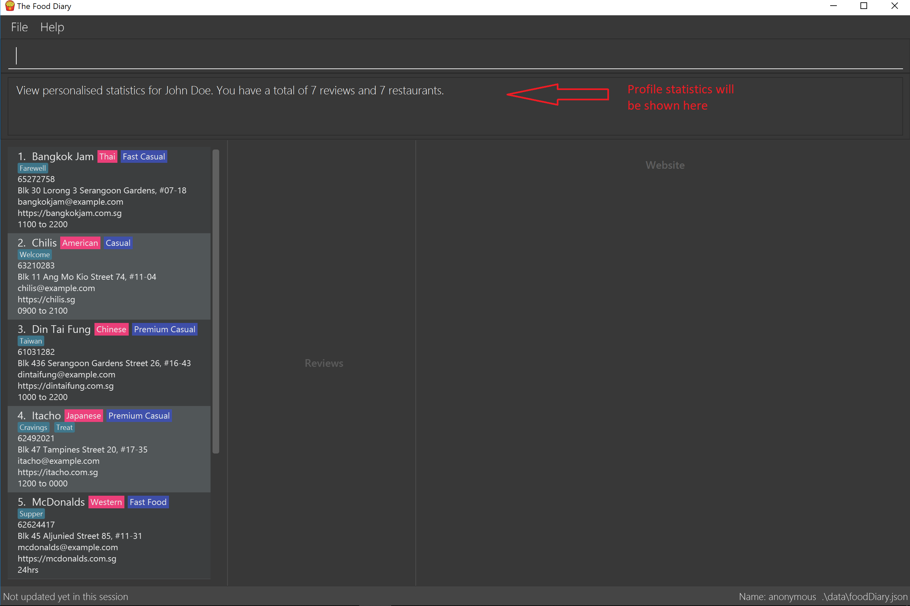

Overview
This project portfolio page serves to document my contributions to The Food Diary, a software engineering project undertaken as part of the National University of Singapore(NUS) School of Computing’s Software Engineering module,CS2103T.
The Food Diary is a journal application for food lovers in Singapore to record their reviews of restaurants they have visited and receive recommendations for restaurants. The user interacts with it using a Command Line Interface(CLI), and it has a Graphical User Interface(GUI) created with JavaFX. It is written in Java, and has about 10 kLoC.
Summary of contributions
-
Major enhancement: I added *the ability to get restaurant recommendations based proximity to a location. *
-
What it does: allows the user to list restaurants that they haven’t reviewed ranked based on how close the restaurant is to the location they provide.
-
Justification: This feature improves the product significantly because a user can make mistakes in commands and the app should provide a convenient way to rectify them.
-
Highlights: This enhancement required the creation of many components to function. Firstly, a python script was used to collect the postal data and parse it into a json file. A new storage system was then created to parse the postal data json file. Finally, this data was then used to sort the restaurants.
-
Credits: https://docs.onemap.sg/ API is used to generate the postal data.
-
-
Minor enhancement: I added a name command that allows users to personalise The Food Diary with their own name.
-
Code contributed: [Functional code] [Test code] {give links to collated code files}
-
Other contributions:
-
Project management:
-
Managed releases
v1.3(1 release) on GitHub -
Released
v1.3jar file on GitHub
-
-
Enhancements to existing features:
-
Wrote additional tests for existing features to increase coverage.
-
-
Documentation:
-
Create the initial User Guide: #2
-
-
Community:
-
PRs reviewed (with non-trivial review comments): #18
-
-
Project conceptualisation:
-
Conceptualised the idea for Food Diary.
-
-
Contributions to the User Guide
Given below are sections I contributed to the User Guide. They showcase my ability to write documentation targeting end-users. |
Welcome to the Food Diary
If you would like to get use the Food Diary straightaway, jump to the [Quick Start] to get started
What is the Food Diary?
The Food Diary (FD) is a desktop app for storing your personal food reviews and obtain food recommendations based on your past reviews.
Why use the Food Diary?
FD is optimized for those who prefer to work with a Command Line Interface (CLI) while still having the benefits of a Graphical User Interface (GUI). If you can type fast, FD can get your foodie tasks done faster than traditional GUI apps. Additionally, FD also stores your data locally, ensuring that your privacy is protected.
Some of the features that can look forward to:
-
Keeping track of restaurants you’ve visited.
-
Getting an aggregate rating over all your visits.
-
Finding out about new restaurants near you for your next gastronomical adventure!
Callout
Callouts are boxes with important information regarding the usage of the Food Diary. These 3 callouts are used throughout our User Guide.
| This is a note. A warning indicates important additional information that should be read. |
| This is a tip. A tip indicates good to know information that would improve your user experience |
| This is a warning. A warning indicates critical information that would affect the functionality of this programme. |
Listing all restaurants that you haven’t visited : listUnvisited
Shows a list of all restaurants that hasn’t been reveiwed by you, ranked based on the proximity to a given postal code.
Format: listUnvisited po/POSTAL_CODE
| Calculation of proximity is based on postal codes. If no postal code or an invalid postal code is provided for a restaurant, it will appear at the bottom of the list. |
Examples:
-
listUnvisitedpo/267951
Return all the restaurants that has no reviews ranked based on the proximity to a given postal code
If you simply want to view unreviewed restaurants, enter listUnvisited po/000000
|
Personalising your food diary with your name: name
Personalise your foodDiary with your name
Format: name n/YourName
Examples:
-
name n/Jack The Sheep
View your profile and usage statistics : view
Set the cuisine of a restaurant identified by the index number used in the listRestaurants.
Format: view
Examples:
view
View personalised statistics for John Doe. You have a total of 7 reviews and a total of 11 restaurants.
-
Example of profile statistics is shown below:

Contributions to the Developer Guide
Given below are sections I contributed to the Developer Guide. They showcase my ability to write technical documentation and the technical depth of my contributions to the project. |
Use case: Getting unvisited restaurant recommendations
MSS
-
FoodLover enters command and his current postal code
-
FoodDiary displays a list of restaurants ranked based on his proximity to the provided postal code.
Use case ends
Extensions
-
2a. Postal code entered is not valid.
-
2a1. FoodDiary displays all the unreviewed restaurants.
Use case ends.
-
PROJECT: PowerPointLabs
{Optionally, you may include other projects in your portfolio.}